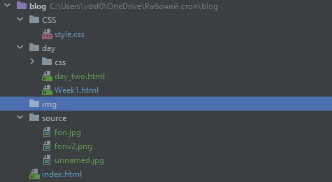
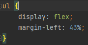

Первый день после первой недели
Пока верстал эти странички, столкнулся с несколькими сложностями, а именно:
- Как красиво оформить блог?
- Как указывать путь к папке если она выше той, в которой находится файл HTML страницы?
- Как маркера списка переносить в центр?
Итак, первое, как красиво оформить блог, ведь я не дизайнер? Пошуршав интернет с поиском Блоги начинающих
я понял, что красивые сайты, это там где много анимации и обязательно, вместо обычного монолитного фона, картинка.
Поэтому я заменил светло-серый фон на картинку
С путём пришлось немного покапаться, например у нас есть проект с такой структурой:

Допустим, мы работаем с файлом Week1.html в папке Day и хотим прописать путь к файлу index.html который находится на папку выше.
Прописывать абсолютный путь не помогает он, считает что это надо где-то искать в папке day. Дак вот оказывается
надо было просто прописать ..
этим самым мы возвращаемся в корневой каталог. Всё как в командой строке ОС.
Далее мне надо было маркера сдвинуть на центр, точно так же как и всё остальное, для этого надо было написать в CSS следующее:

Возможно выглядит как костыль, но позже я это исправлю